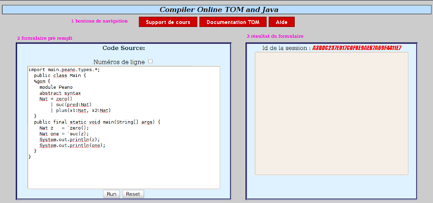
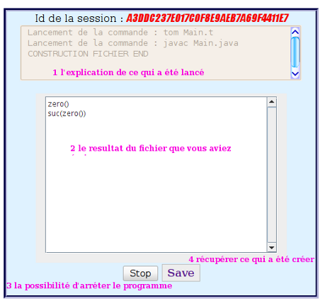

Utilisation du site TOMCO
Le but de ce site est de vous permettre de tester le langage TOM.
Pour cela, vous avez la possibilité de copier depuis un éditeur de texte de
votre choix du code dans la console "Code Source" prévue à cette effet.
Comme vous pouvez le constater, cela implique que vous devez créer qu'un seul
fichier. En effet, le site n'a pour l'instant pas le but de permettre la
création de projet mais cela pourrait être fais dans des versions futures du sites.
En ce qui concerne, le code écrit vous êtes limité à écrire soit du code
java ou tom avec des retour à l'écran (System.out). L'exécution de tout autre langage
créerait automatiquement une erreur.
De plus lors de la création de votre fichier, le formatage de la ligne :
"public class Nom { " aura une grande importance. Contrairement au principe de
bonne écriture de java, nous ne vous limitons pas à écrire un nom de classe
avec une majuscule même si cela est la bonne attitude en programmation.
Cependant, vous serez obligé de mettre un caractères blanc {espace, retour à la ligne ....}
au moins entre votre nom de classe et l'accolade ouvrante.
Pour finir, nous devons ajouter qu'il est impossible de créer du code sans
avoir la méthode : "public final static void main(String[] args) {}".
C'est une nécessitée d'utilisation du site.
Quand vous arrivez sur le site vous avez pu constater qu'il y avais ces éléments:

La navigation vous permet de vous diriger vers des informations, et des tutoriaux
sur TOM, ainsi que sur l'aide sur lequel vous vous trouvez.
Au niveau du formulaire vous avez 4 fonctionnalités:
- Si vous avez javascript, vous pourrez afficher les numéros de ligne en cas
d'erreur. Vous pourrez modifier sans passer par un éditeur.
- L'événement principal est d'écrire du code, si il y a une erreur du au nom
de fichier vous pourrez trouver un phras qui l'indique sous "Code source".
Initialement le champs est vide.
- En appuyant sur reset, vous revenez à cette état initial.
- En appuyant sur run, vous obtiendrai :

vous lancer la création du fichier qui conduira à l'affichage du cadre 1.
En cas du succés vous aurez la phrase "CONSTRUCTION END "
En cas d'erreur, elles seront reportées à ce niveau. Et il n'y aura pas
l'apparition des objet 2, 3 et 4.
Si la construction s'est bien passé vous verrez alors dans le cadre 2, ce que
vous avez construit. Si il y a un probléme lors de cette affichage (boucle
infini) vous avez la possibilité d'appuyer sur le bouton stop. Cela aura pour
effet, d'effacer tout le contenu précédent. Mais le code qui vous aura conduit
à cette boucle sera encore présent et n'attendra qu'à être modifier. A partir
de là, un nouvel appuie sur "run" relancera le processus. Si il n'y a aucun
soucis, le bouton "save" vous permettra de récupèrer le ".jar" généré.
Attention tout de même, le fichier que vous récupérer s'appellera à chaque fois,
etud.jar. Il vous incombe de mieux renommé votre archive pour n'avoir aucun soucis
de rangement.
- Sur la dernière console, j'ai ce message d'erreur : "Probleme de chargement
de votre class. Impossible d'executer le code java.lang.NoSuchMethodException:"
- Si dans votre classe , il n'y a pas de méthode main, vous pourrez
récupérer ce type de message. Si vous ne voulez pas créer de méthode main,
vous allez à l'encontre de l'objectif de ce site.
- Sur une des 2 console de retour, j'ai une erreur qui dis de demander au webmaster
- Toutes les erreurs que vous pouvez récupérer ne sont pas forcément dû à
votre code, il se peut qu'il y est des erreurs lors de la création du fichier
et cela se passe côté serveur. Ecrivez un mail au webmaster en lui expliquant
ce que vous avez fais avec votre code et ce qui a été afficher à l'écran.
- Il me renvoie une erreur de nom de fichier invalide, pourquoi?
- Comme nous l'avons dis précédemment il manque sûrement un espace entre
votre nom de fichier et l'accolade ouvrante de la class
- Je n'ai aucun retour sur mon code alors que c'est marquer Construction End
- Il y a plusieurs possibilités :
- Soit vous n'avez pas la console de l'applet avec les boutons,
dans ce cas écrivez un mail au webmaster et faite l'état de l'erreur,
la façon dont vous avez procédé etc ...
- Soit vous avez un texte explicatif sur le fait qu'il n'y est pas
la console, suivez ce qui est alors indiqué.
- Soit vous avez une console mais sans rien dedans, vérifier que
vous avez dans votre méthode main des "System.out.print"
- Je n'arrive pas à enregistrer les fichiers que j'ai créer
- Si quand vous appuyer sur le bouton "save" et qu'il ne se passe rien,
il y a une possibilité que votre fichier ai été effacer du serveur. Il suffit
juste de relancer la reconstruction et vous pourrez avoir votre archive
- Votre question ne se trouve pas ici ? ...
- ... envoyer un mail au webmaster